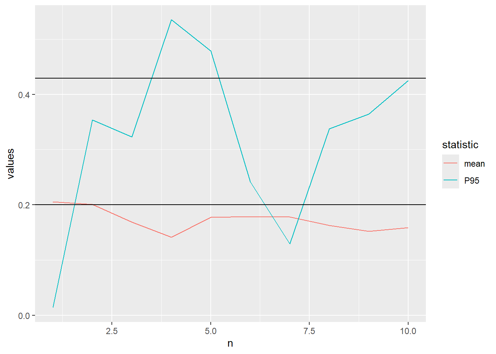
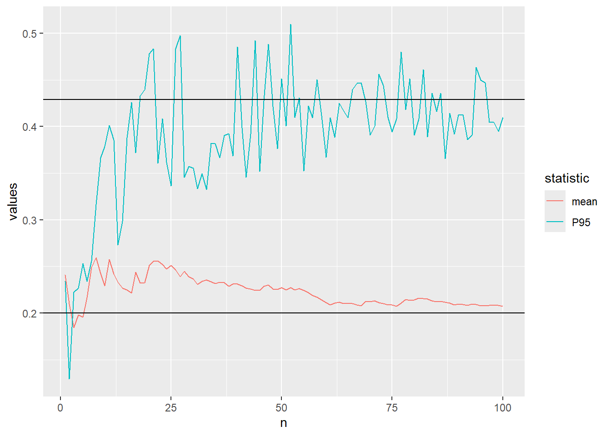
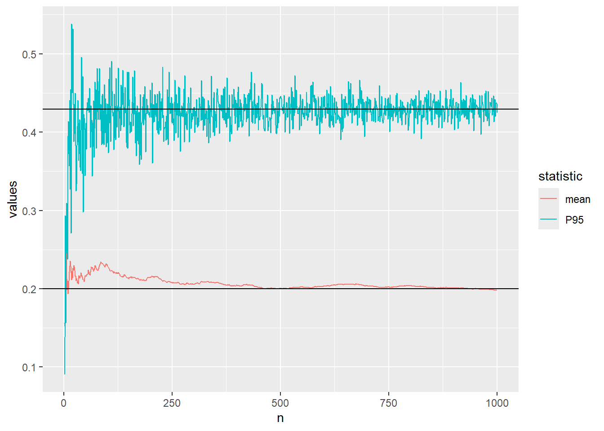
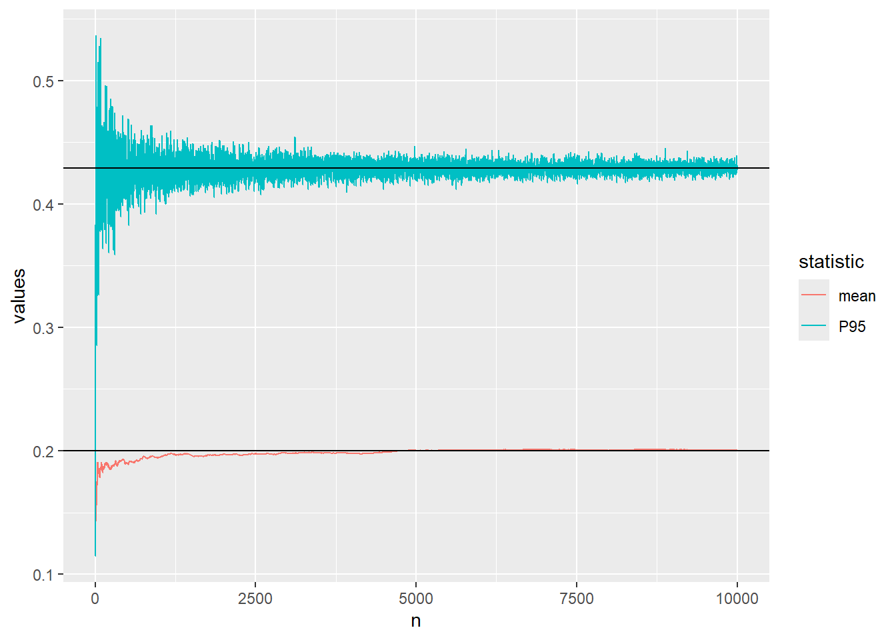

library(readr)
library(dplyr)
library(ggplot2)The R-version of what we did in Introduction to useful functions in Excel
MVEN10
Preparations
Load packages
Load data and save the variable to an object called x
df = as_tibble(read_csv("../data/breast-cancer.csv"))%>% select(radius_mean)Descriptive statistics
summary(df) radius_mean
Min. : 6.981
1st Qu.:11.700
Median :13.370
Mean :14.127
3rd Qu.:15.780
Max. :28.110 x = df$radius_mean
quantile(x,probs=0.25) 25%
11.7 median(x)[1] 13.37quantile(x,probs=0.95) 95%
20.576 mean(x)[1] 14.12729sd(x)[1] 3.524049min(x)[1] 6.981max(x)[1] 28.11length(x)[1] 569Calculate the three summary statistics described in the green area of the sheet.
- The third quartile in the sample, P75
quantile(x,probs=0.75) 75%
15.78 - The 5% quantile (or 5th percentile), P05
quantile(x,probs=0.05) 5%
9.5292 - The coefficient of variation is the ratio between the sample standard deviation and the sample mean
sd(x)/mean(x)*100[1] 24.94497Histogram
hist(x)df %>%
ggplot(aes(x=x))+
geom_histogram()df %>%
ggplot(aes(x=x))+
geom_histogram(binwidth = 2.5)df %>%
ggplot(aes(x=x))+
geom_density()Probability functions
The probability functions follow the principles of combining p, d, q and r with the name (or short name) of the probability distributions.
| What to calculate | R-function |
|---|---|
| CDF | pnorm |
| dnorm | |
| quantile | qnorm |
| random draw | rnorm |
Calculate the probability that a normally distributed variable with mean 14 and standard deviation 3.5 is less than 10
pnorm(10,mean=14,sd=3.5)[1] 0.126549Find the 95% quantile in the same distribution
qnorm(0.95,mean=14,sd=3.5)[1] 19.75699Calculate the probability that an exponentially distributed variable with mean 14 is less than 10
pexp(10,rate=1/14)[1] 0.5104583
Tip
Type a question mark before the function to see the help text ?pexp
Plot probability distributions
m=14
s=3.5
data.frame(pp=ppoints(100)) %>%
mutate(x=qnorm(pp,m,s)) %>%
mutate(d=dnorm(x,m,s)) %>%
ggplot(aes(x=x,y=d))+
geom_line()+
xlab('value')+
ylab('density')
Extra
If you feel you have the time or do another time:
Copy the sheet and refine the grid by using pp-values from 0.001 to 0.999.
m=14
s=3.5
data.frame(pp=ppoints(1000)) %>%
mutate(x=qnorm(pp,m,s)) %>%
mutate(d=dnorm(x,m,s)) %>%
ggplot(aes(x=x,y=d))+
geom_line()+
xlab('value')+
ylab('density')Random sampling
All sample generators start with a random number between 0 and 1. This is also a sample from a uniform distribution.
runif(1)[1] 0.5157716Type a function that generates a uniform random number in the interval 1 to 6.
runif(1,min=1,max=6)[1] 3.082933A random draw from a probability distribution can be generated by the inverse method. - Draws pp-values from a uniform distribution between 0 and 1 - Transform them into quantiles of the target distribution
Generates random draws from a normal distribution using the inverse method
qnorm(runif(1),m,s)[1] 21.98701This is already implemented as a function
rnorm(1,m,s)[1] 3.810851Draw from a beta distribution with parameters \(\alpha=2\) and \(\beta=8\)
rbeta(1,2,8)[1] 0.06455464Compare descriptive statistics against theoretical values
Wow - now we can generate data where we know the true value on parameters and all theoretical probabilities and quantiles, and compare with what we get when deriving descriptive statistics from the random sample.
This sheet generates a random sample of size 20 from a beta distribution.
rbeta(n=20,2,8) [1] 0.36084111 0.10008663 0.38857181 0.24321868 0.14883339 0.09861421
[7] 0.16529505 0.19914953 0.07828037 0.32408276 0.18381287 0.06806036
[13] 0.17063493 0.36194333 0.23876146 0.18577685 0.13695835 0.05474481
[19] 0.12473968 0.27006273A beta distribution has two parameters \(\alpha\) and \(\beta\)
The expected value of a beta distributed variable is \(\frac{\alpha}{\alpha+\beta}\)
Compare the calculated sample average to the theoretical expected value
alpha=2
beta=8
alpha/(alpha+beta)[1] 0.2mean(rbeta(n=20,alpha,beta))[1] 0.2358549We can also derive the theoretical quantile, let us say the P95.
Compare the quantile from the sample with the quantile calculated from the inverse probability distribution function
qbeta(0.95,alpha,beta)[1] 0.4291355quantile(rbeta(n=20,alpha,beta),probs=0.95) 95%
0.4142784 - Which of them has the smallest difference? Why do you think it is like that?
Extra
If you feel you have the time or do another time:
Explore what happens with the difference between theoretical and statistical values when you increase sample size from 20 to a high number (close to 1000)?
Below I wrte a script where sample size is controlled at one place. The P95 is approximated fairly well by the sampling when I use \(n=10 000\).
alpha=2
beta=8
n=10000
alpha/(alpha+beta)[1] 0.2mean(rbeta(n=n,alpha,beta))[1] 0.2002946qbeta(0.95,alpha,beta)[1] 0.4291355quantile(rbeta(n=n,alpha,beta),probs=0.95) 95%
0.4313936 Let us visualise the convergence of the approximation of the mean and 95th percentile of the beta distribution using Monte Carlo simulation.
The code below defines a function which calculates the mean and P95 after every increase of the sample size and plots the convergence.
plot_conv <- function(n){
sample_mean=cummean(rbeta(n=n,alpha,beta))
sample_P95=unlist(lapply(1:n,function(iter){
quantile(rbeta(n=iter,alpha,beta),probs=0.95)}))
data.frame(values=c(sample_mean,sample_P95),n=rep(1:n,2), statistic=rep(c("mean","P95"),each=n)) %>%
ggplot(aes(x=n,y=values,color=statistic))+
geom_line()+
geom_hline(yintercept = alpha/(alpha+beta)) +
geom_hline(yintercept = qbeta(0.95,alpha,beta))
}We start with \(n=10\)
plot_conv(n=10)
..increase to \(n=100\)
plot_conv(n=100)
..increase to \(n=1000\)
plot_conv(n=10^3)
..and finally \(n=10000\)
plot_conv(n=10^4)